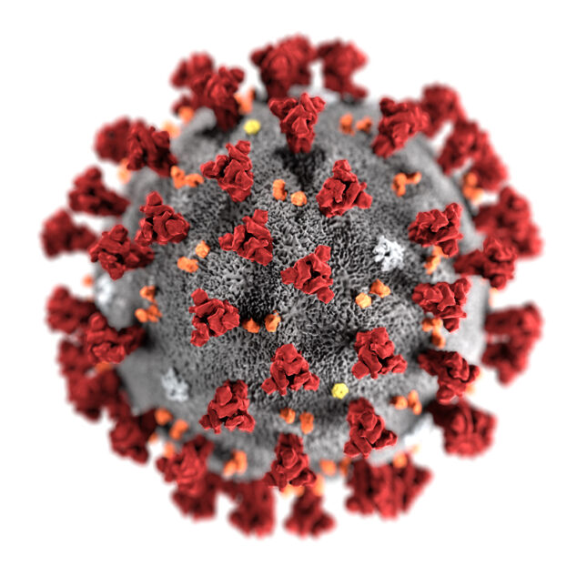
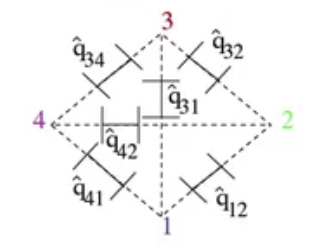
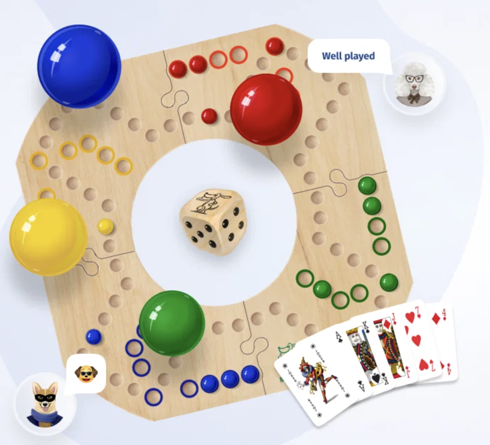
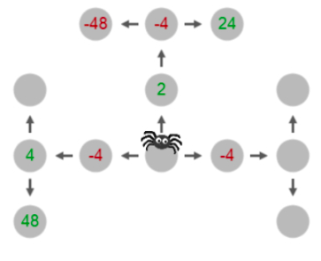
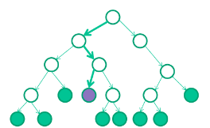
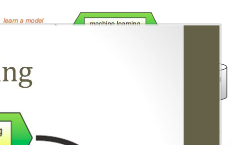

|
Sanit Gupta
atpugtinass@gmail.com unscramble
|
Updates
- [Apr 2022] Our paper on PAC Mode Estimation accepted at AISTATS 2022
- [Jul 2020] Our work on modelling the spread of COVID-19 in India is now out on arXiv
- [Jun 2020] I was accepted into the DLRL Summer School 2020 hosted by CIFAR and Mila
- [Aug 2019] I was awarded the Undergraduate Research Award at IIT Bombay
- [Jul 2019] Our paper on reverse engineering human planning accepted at CCN 2019
- [May 2019] I'll be interning at the Max Planck Institute for Intelligent Systems over Summer 2019
- [Sep 2017] Ranked 1st in IIT Bombay in American Express's data science competition
|
|

|
An India-specific Compartmental Model for Covid-19: Projections and Intervention Strategies by Incorporating Geographical, Infrastructural and Response Heterogeneity
Sanit Gupta, Sahil Shah, Sumit Chaturvedi, Pranav Thakkar, Parvinder Solanki, Soham Dibyachintan, Sandeepan Roy, M. B. Sushma, Adwait Godbole, Noufal Jaseem, Pradumn Kumar, Sucheta Ravikanti, Aritra Das, Giridhara R. Babu, Tarun Bhatnagar, Avijit Maji, Mithun K. Mitra, Sai Vinjanampathy
report //
code
|
|

|
PAC Mode Estimation using PPR Martingale Confidence Sequences
S. Jain, R. Shah, S. Gupta, D. Mehta, I. Nair, J. Vora, S. Khyalia, S. Das, V. Ribeiro, S. Kalyanakrishnan
International Conference on Artificial Intelligence and Statistics (AISTATS) 2022
paper
|
|

|
Multiplayer Skill Rating System
Designed the Elo-based skill rating system for Brändi Dog Online, the digital adaptation of Switzerland's best-selling board game. The system governs rating updates across solo and team modes and has been validated across 500,000+ games played by active users.
|
|

|
How do people learn how to plan?
Yash Raj Jain, Sanit Gupta, Vasundhara Rakesh,
Peter Dayan, Frederick Callaway,
Falk Lieder
Cognitive Computational Neuroscience (CCN) 2019
paper
|
|
|
Developing and Analyzing Algorithms for the Multi-Armed Bandit
With Prof. Shivaram Kalyanakrishnan
Developed Persistence - a generally applicable modification to multi-armed bandit algorithms. Empirically outperformed the corresponding unmodified baselines across all proposed algorithms, and proved the improvement theoretically for the ε-greedy algorithm.
report //
slides
|
|
|
Parallel Computing for the Laplace Equation on Unstructured Grids
With Prof. Shivasubramanian Gopalakrishnan
Developed an end-to-end parallel solver for the Laplace equation over arbitrary domain shapes, with applications in thermodynamics and electrostatics. Compared naive geometric partitioning with graph-based min-cut partitioning and showed that min-cut partitioning significantly reduces inter-processor communication volume, yielding up to ~14x speedup over the serial solver.
|
|

|
Distributed Mixed Integer Optimization
High Performance Scientific Computing
Developed a solver for mixed integer programs implementing the Branch-And-Bound algorithm.
Designed a parallel version that could reduce runtime from exponential to linear given enough cores
|
|

|
E-Commerce Product Classification incorporating human feedback
Lymbyc
Built a machine learning pipeline to classify e-commerce products into categories, introduced an active learning component.
Active learning by Pool based Entropy sampling increased classification accuracy from 89.2% to 98%.
|
|
|
Optimal Bidding
6th Annual Inter-IIT Tech Meet
Solved a stochastic optimization problem to minimize electricity bill for a gated community.
Implemented the solutions using Particle Swarm Optimization and Dynamic Programming
|
|
{kind=link}